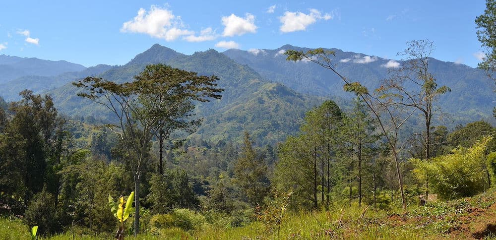

In the remote southwest corner of Papua New Guinea lies a region of unparalleled biological richness. Western Province—the country's largest province—is a vast wilderness of lowland rainforest, mighty rivers, vast floodplains, and savanna grasslands that harbors an astonishing diversity of birdlife. With over 400 bird species recorded, this single province is home to more than 50% of Papua New Guinea's total bird population, making it one of the most significant birding destinations on earth.
The Western Province region is truly exceptional. From the legendary Raggiana Bird of Paradise to the enormous Southern Cassowary, from the world's largest pigeon to a dazzling array of parrots, kingfishers, and endemic species found nowhere else, Western Province offers bird watchers an experience that rivals any location on the planet. The combination of diverse habitats—lowland rainforest, riverine forest, savanna, and the unique Trans-Fly region—creates a birding paradise that serious ornithologists dream about.
Western Province Birding & Goroka Show 2026
August 30 – September 18, 2026
Combine the ultimate lowland birding experience with the Goroka Show
Western Province: Papua New Guinea's Bird Diversity Hotspot
Why does Western Province hold such extraordinary bird diversity? The answer lies in its geography and habitat variety. Stretching from the Star Mountains in the north to the Torres Strait in the south, Western Province encompasses a remarkable range of ecoregions. The province is drained by the mighty Fly River—one of the largest river systems in the world—and its numerous tributaries, creating vast floodplain forests, oxbow lakes, and wetlands that support specialized bird communities. The lowland rainforests are among the most extensive and intact in the Asia-Pacific region, providing habitat for species that have disappeared from more disturbed areas elsewhere.
The province also includes the unique Trans-Fly region in the south, a vast savanna and wetland ecosystem that extends into Australia. This area is home to an extraordinary mix of New Guinean and Australian bird species, creating a hybrid avifauna found nowhere else on earth. For bird watchers, Western Province offers the chance to see birds that simply cannot be found in any other part of Papua New Guinea.
Key Birding Regions in Western Province
Kiunga and the Lower Fly River
The town of Kiunga is the gateway to some of the most accessible and productive birding in Western Province. The surrounding lowland rainforest is extraordinarily rich, and the network of rivers allows for boat-based birding that opens up habitats otherwise difficult to access. This area is famous for its Birds of Paradise, with multiple species regularly seen at established display sites. The Kiunga area is also one of the best places in Papua New Guinea to see the enormous Southern Cassowary, the world's third-largest bird.
Tabubil and the Star Mountains
In the northern part of the province, the Star Mountains rise to over 4,000 meters, creating altitudinal zones from lowland to subalpine. The area around Tabubil offers access to hill forest and montane species not found in the lowlands, including high-altitude Birds of Paradise and a host of endemic species. The combination of accessible trails and diverse habitats makes this a must-visit destination for serious birders.
The Trans-Fly Region
The southernmost part of Western Province, known as the Trans-Fly, is a vast savanna and wetland ecosystem that extends into Australia's Cape York Peninsula. Here, species more typical of Australia—such as the spectacular Palm Cockatoo, various honeyeaters, and an array of waterbirds—can be found alongside New Guinean species. The wetlands of the Trans-Fly are internationally significant, supporting enormous concentrations of waterbirds during the dry season.
Key Bird Species of Western Province

With over 400 species recorded, Western Province offers an incredible diversity of birdlife. Here are some of the most sought-after species:
Birds of Paradise (15+ species)
- Raggiana Bird of Paradise – Papua New Guinea's national bird, spectacular and relatively common
- King Bird of Paradise – A small but stunning species with brilliant red plumage
- Twelve-wired Bird of Paradise – Named for the unique wires that extend from its tail
- Greater Bird of Paradise – One of the largest and most spectacular species
- Magnificent Riflebird – Known for its incredible courtship display
- Glossy-mantled Manucode – A glossy black species with a beautiful call
- Trumpet Manucode – Named for its distinctive trumpeting call
Megapodes and Cassowaries
- Southern Cassowary – The world's third-largest bird, found in lowland forests
- Wattled Brushturkey – A large megapode that incubates eggs in mounds
- Black-billed Brushturkey – A smaller species found in hill forests
Parrots and Cockatoos
- Palm Cockatoo – A spectacular large black cockatoo with red cheek patches
- Sulphur-crested Cockatoo – Widespread and unmistakable
- Eclectus Parrot – With dramatically different male and female plumage
- Double-eyed Fig Parrot – One of the world's smallest parrots
- Vulturine Parrot – A unique species with a featherless head
Pigeons and Doves
- Southern Crowned Pigeon – The world's largest pigeon, a stunning blue bird with an elaborate crest
- Scheepmaker's Crowned Pigeon – Another of the giant crowned pigeons
- Victoria Crowned Pigeon – The most spectacular of the crowned pigeons
- Wompoo Fruit-Dove – A large, colorful fruit-dove
- Pink-spotted Fruit-Dove – A small, jewel-like species
Kingfishers
- Blue-winged Kookaburra – The largest kingfisher in Papua New Guinea
- Rufous-bellied Kookaburra – A stunning species with rich rufous underparts
- Common Paradise Kingfisher – A spectacular migratory species with long tail streamers
- Azure Kingfisher – A small, brilliant blue species found along waterways
Trans-Fly Specialties
- Fly River Grassbird – An endemic species found only in the Trans-Fly region
- Black-backed Butcherbird – A species with a restricted range
- White-browed Robin – Found only in the savannas of southern Papua New Guinea
The Bird Watching Experience
A typical day of birding in Western Province begins before dawn. The early morning chorus is spectacular, with the forest coming alive with the calls of Birds of Paradise, fruit-doves, and parrots. Visitors work with expert local guides who know the best sites for target species, including established Bird of Paradise display areas, fruiting trees that attract mixed flocks, and specific trails for skulking species.
Much of the best birding in Western Province is done from boats on the Fly River and its tributaries. This allows access to floodplain forest, riverine habitats, and oxbow lakes that are otherwise inaccessible. Boat-based birding offers the added benefit of covering large areas efficiently and allows for excellent photography opportunities.
In the lowland rainforest, visitors walk established trails, often early in the morning and late in the afternoon when bird activity is highest. The forest can be hot and humid, but the birding rewards are immense. For photographers, the combination of dramatic forest light and spectacular birds is unparalleled.
Combining Western Province Birding with Goroka Show 2026
September is an excellent month for birding in Western Province, with the dry season providing good access to trails and rivers. The Goroka Show in mid-September offers a perfect opportunity to combine a lowland birding expedition with the country's premier cultural festival.
Recommended Itinerary: Ultimate PNG Birding & Culture
- August 30: Arrive in Port Moresby, connect to Kiunga
- August 31 – September 6: Kiunga and Lower Fly River birding (7 days targeting lowland Birds of Paradise and specialties)
- September 7-10: Tabubil and Star Mountains (hill forest and montane species)
- September 11-13: Trans-Fly region (savanna and wetland specialties)
- September 14: Fly to Goroka, rest and preparation
- September 15-16: Goroka Show (full festival experience)
- September 17: Asaro Valley cultural extension (optional)
- September 18: Depart Goroka
This itinerary offers the ultimate Papua New Guinea birding experience: nearly three weeks exploring the country's most diverse birding region, culminating in the spectacle of the Goroka Show.
Planning a Western Province Birding Expedition
Best Time to Visit
The dry season (May through October) offers the most favorable conditions for birding in Western Province. September is particularly ideal—the weather is stable, trails are accessible, rivers are navigable, and visits can be combined with the Goroka Show. The breeding season for most Birds of Paradise occurs between July and December, so September offers excellent opportunities to witness courtship displays.
Getting There
Western Province is accessible via scheduled flights from Port Moresby to Kiunga and Tabubil. Air Niugini and PNG Air operate regular services. From Kiunga, boat transport is used to access many birding sites. All logistics are arranged as part of the birding package.
Accommodation
Accommodation in Western Province ranges from comfortable lodges in Kiunga and Tabubil to eco-lodges and community-based guesthouses in more remote areas. All are clean and comfortable, with a focus on the birding experience. Meals are provided and cater to dietary requirements with advance notice.
What to Bring
- Binoculars – Essential for bird watching. High-quality optics recommended
- Camera with telephoto lens – For capturing Birds of Paradise and other specialties
- Lightweight, breathable clothing – The lowland tropics are hot and humid
- Waterproof jacket – Rain can occur even in the dry season
- Sturdy, broken-in hiking boots – For rainforest trails
- Field guide – "Birds of New Guinea" by Pratt and Beehler is essential
- Notebook and field checklist – For keeping a life list
- Headlamp with extra batteries – For early morning departures
- Insect repellent – Mosquitoes are present in lowland areas
- Reusable water bottle – Staying hydrated is important
- Sun hat and sunscreen – For boat-based birding
Why Book a Western Province Birding Safari With Bismark Touris?
Bismark Touris is Papua New Guinea's leading birding tour specialist, with years of experience guiding expeditions to Western Province. Comprehensive packages include:
- Expert bird guides – Guides have decades of experience in Western Province and know the location of every target species
- All logistics – Flights, boat transport, permits, and accommodation arranged seamlessly
- Comfortable accommodation – A mix of lodges and community-based eco-lodges
- All meals – Excellent food throughout the safari
- Boat-based birding – Access to riverine habitats not available by road
- Goroka Show combination packages – Seamless integration of birding and cultural experiences
- Photography guidance – Tips from guides who understand bird behavior and lighting conditions
- Conservation support – Visits directly support the protection of Western Province's forests
Conservation and Community
The forests of Western Province are under pressure from logging and mining activities. Bird watching tourism provides a powerful economic incentive for conservation. When visitors choose Bismark Touris, they directly support local communities who have chosen to protect their forests and establish birding tourism as an alternative livelihood. Their visit helps ensure that this extraordinary bird diversity will survive for generations to come.
Strict ethical bird watching guidelines are practiced: maintaining respectful distances from display sites, limiting group sizes to minimize disturbance, and supporting local guide training and development. The commitment to conservation is at the heart of all operations.
Frequently Asked Questions
How many bird species can be expected in Western Province?
With a 10-14 day safari covering Kiunga, Tabubil, and the Trans-Fly, experienced birders can expect to see 200-250 species, including most of the region's Birds of Paradise and endemics. First-time visitors to Papua New Guinea can expect 150-200 species with expert guidance.
Is Western Province safe for bird watching?
Yes, with proper planning and local guidance, Western Province is safe for bird watching. Operations are well-established with strong community relationships. Experienced local guides who know the area intimately are provided, ensuring safe travel at all times.
What is the photography like in Western Province?
Western Province offers exceptional bird photography opportunities, particularly for Birds of Paradise, crowned pigeons, and kingfishers. The lowland forest light can be challenging, but guides know the best locations and times for photography. A telephoto lens (400mm or longer) and good technique are recommended.
What is the accommodation like?
Accommodation ranges from comfortable lodges in Kiunga and Tabubil to basic but clean eco-lodges in more remote areas. All options are comfortable and focused on the birding experience. Accommodation can be tailored to preferences and budget.
What is the cost of a Western Province birding safari?
Prices vary based on group size, number of days, and whether combined with the Goroka Show. A 10-day Western Province birding safari typically starts from PGK 6,800 per person (based on 2 people sharing). Contact Bismark Touris for a personalized quote.
Book a Western Province Birding Safari & Goroka Show 2026 Adventure
Limited availability for August-September 2026. Early booking is essential to secure guide availability and accommodation in this remote region.
Phone: +675 76769513
WhatsApp: +675 76769513
Email: info@bismarktouris.com
Book by June 2026 to secure the best guide availability and accommodation options